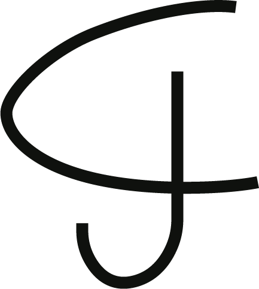
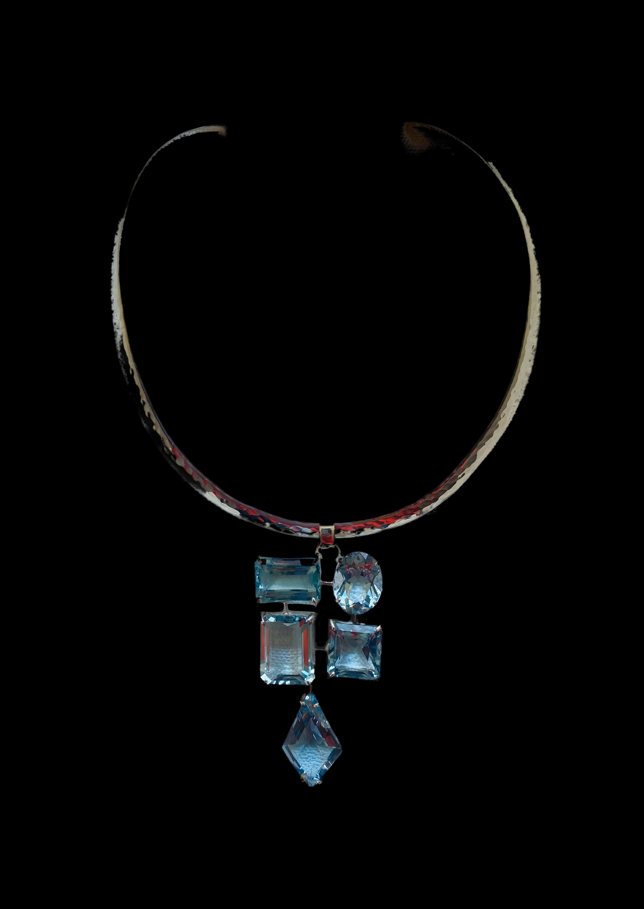
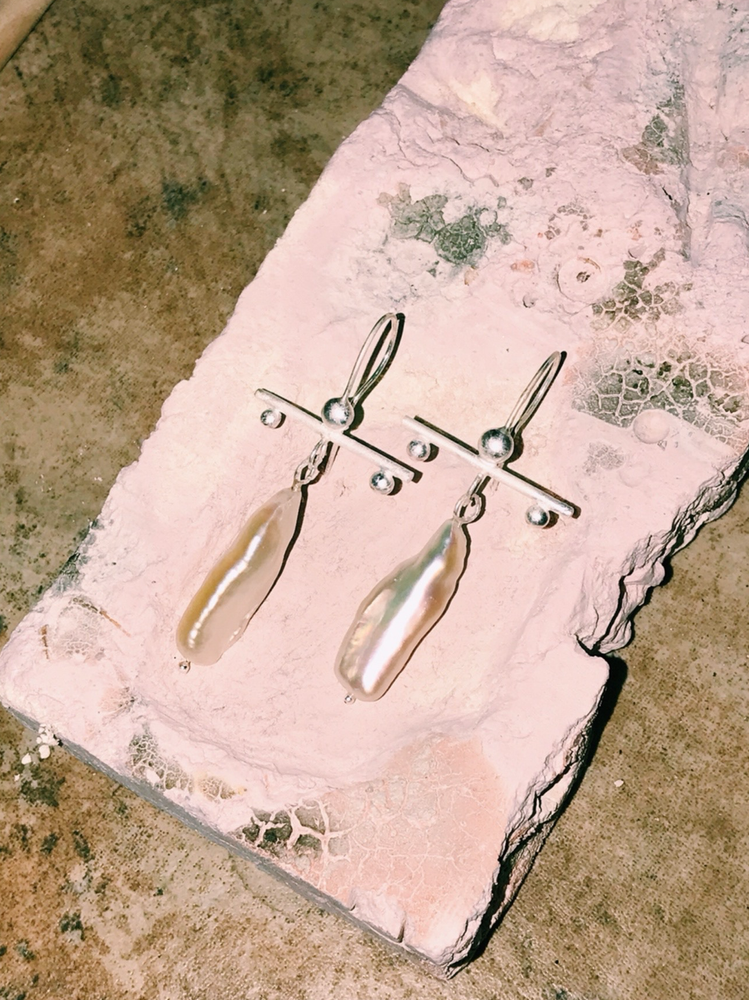
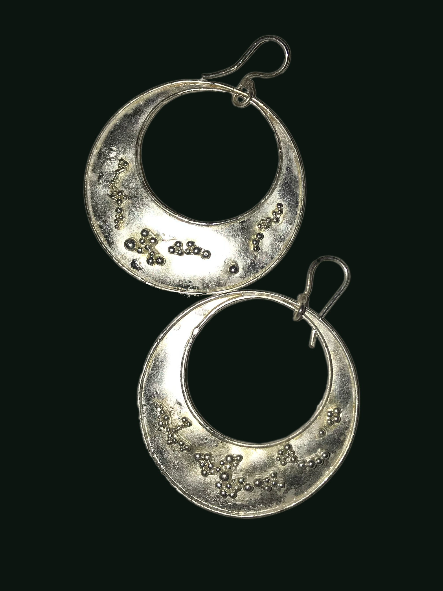
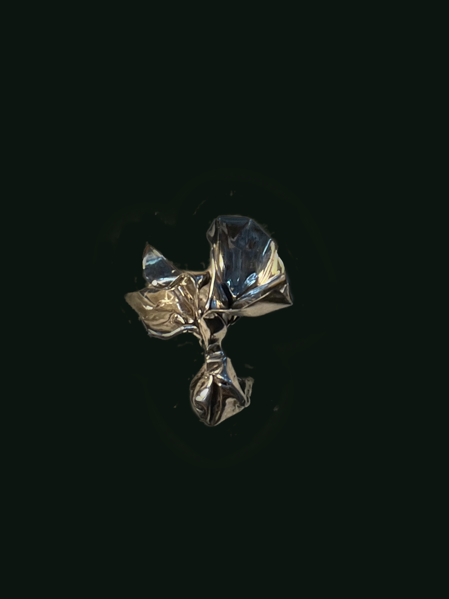

Jo-ann Arosemena is a Panamanian
Artist and Designer
who lives and works in New York City
she has a BFA from Pratt Institute and a Graduate Gemologist degree from GIA
As featured in Vogue.
drop me a line
x
   
❮
❯